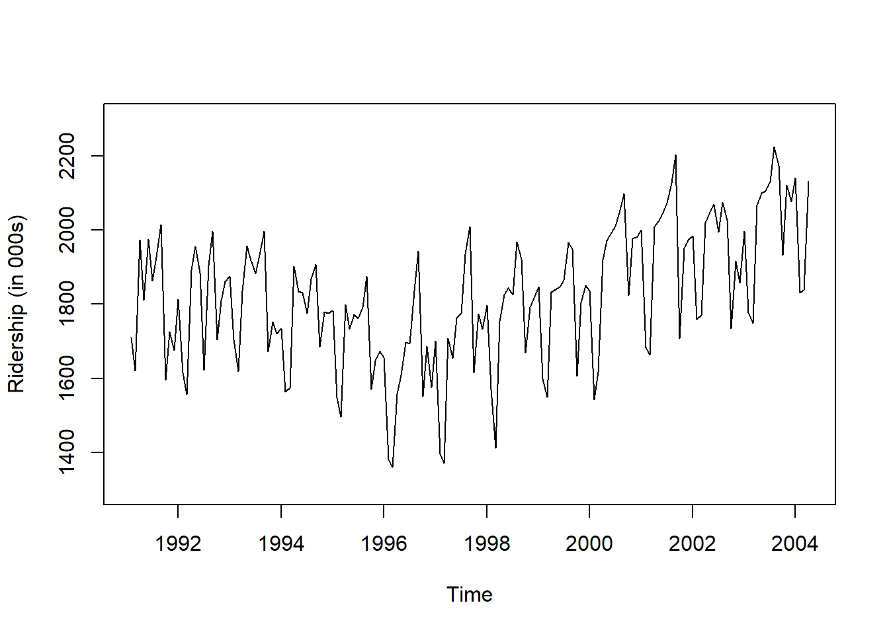

pacman::p_load("forecast",
"forecastHybrid", # For Ensemble
"dplyr")
Amtrak.data <- read.csv(".../Amtrak.csv") # 데이터 불러오기
Amtrak.data %>%
as_tibble13 Ensemble
13.1 Amtrak
예제 데이터로 사용하는 "Amtrak.csv"은 1991년 1월부터 2004년 3월까지 미국 철도 회사인 암트랙에서 제공한 월간 승객 수(단위 : 1,000명)가 기록되어져 있다.
13.1.1 데이터 불러오기
# A tibble: 159 × 2
Month Ridership
<chr> <dbl>
1 01/01/1991 1709.
2 01/02/1991 1621.
3 01/03/1991 1973.
4 01/04/1991 1812.
5 01/05/1991 1975.
6 01/06/1991 1862.
7 01/07/1991 1940.
8 01/08/1991 2013.
9 01/09/1991 1596.
10 01/10/1991 1725.
# ℹ 149 more rows13.1.2 데이터 전처리
# Convert to ts for Target
ridership.ts <- ts(Amtrak.data$Ridership,
start = c(1991, 2), # 시계열의 시작 연도 / c(1991, 2) : 1991년 2월 -> 첫 번째 시계열은 제거했기 때문
frequency = 12) # 주기 / 월별 시계열로 1년에 12번 관측
# 시계열 그림
plot(ridership.ts,
xlab = "Time", ylab = "Ridership (in 000s)",
ylim = c(1300, 2300))
Caution! CSV 파일로 불러온 데이터를 살펴보면 승객 수를 포함하는 변수 Ridership가 수치형임을 알 수 있다. 시계열 데이터 분석을 위해 함수 ts()를 이용하여 해당 변수를 시계열 객체로 변환해야 한다.
Result! 시계열 그림을 살펴보면 Amtrak 데이터는 U자 형태의 추세를 발견할 수 있으며, 여름(7월과 8월) 동안에 승객이 급증하는 뚜렷한 계절변동도 볼 수 있다.
13.1.3 데이터 분할
Caution! 시계열 데이터 분석 시 모형의 과적합을 피하고 미래 데이터에 대한 예측력을 계산하기 위해 Training Dataset과 Test Dataset으로 분할해야 한다. 시계열 데이터의 경우, 시간에 의존하기 때문에 시간 순서를 고려하여 데이터를 분할해야 한다. 즉, 앞 시점의 데이터를 Training Dataset로 사용하여 모형을 구축하고, 뒷 시점의 데이터를 Test Dataset로 사용하여 구축된 모형의 성능을 평가한다. 여기서는 데이터 분할을 위해 함수 window()를 사용한다.
# Partition for Target
train.ts <- window(ridership.ts,
start = c(1991, 2), # 분할하고자 하는 시계열의 시작 연도 / c(1991, 2) : 1991년 2월 -> 첫 번째 시계열은 제거했기 때문
end = c(2001, 3)) # 분할하고자 하는 시계열의 마지막 연도 / c(2001, 3) : 2001년 3월
test.ts <- window(ridership.ts,
start = c(2001, 4)) # 분할하고자 하는 시계열의 시작 연도 / c(2001, 4) : 2001년 4월
nTrain <- length(train.ts) # Training Dataset의 데이터 포인트 개수
nTest <- length(test.ts) # Test Dataset의 데이터 포인트 개수
train.ts %>%
as_tibble# A tibble: 122 × 1
x
<dbl>
1 1709.
2 1621.
3 1973.
4 1812.
5 1975.
6 1862.
7 1940.
8 2013.
9 1596.
10 1725.
# ℹ 112 more rowstest.ts %>%
as_tibble# A tibble: 37 × 1
x
<dbl>
1 2008.
2 2024.
3 2047.
4 2073.
5 2127.
6 2203.
7 1708.
8 1951.
9 1974.
10 1985.
# ℹ 27 more rowsnTrain[1] 122nTest[1] 3713.2 Ensemble
여기에서는
forecastHybrid패키지를 활용하여 다양한 예측 모형을 결합한 앙상블(Ensemble) 예측을 수행하는 방법을 다룬다. 시계열 모형은 각각의 특성에 따라 예측력이 다르므로, 여러 모형을 결합하여 예측 정확도를 향상시킬 수 있다. 특히forecastHybrid는 ARIMA, ETS, NNETAR, STLM 등 여러 모형을 자동으로 결합해주는 기능을 제공한다.
set.seed(100)
fit <- hybridModel(train.ts,
models = "afnst",
weights = "cv",
parallel = TRUE,
num.cores = 8) Code!
- 인자
models에 입력할 수 있는 모형은 다음과 같다:
| 코드 | 모형명 | 설명 |
|---|---|---|
| a | ARIMA | Box-Jenkins ARIMA 모형 (자동 모수 선택 포함) |
| e | ETS | 지수 평활법 (Error, Trend, Seasonal을 자동 선택) |
| n | NNETAR | 비선형 신경망 기반 자기회귀 모형 (Neural Network Autoregression) |
| s | STLM | Seasonal Decomposition + AR 모형 (계절 분해 후 AR모형 적용) |
| t | TBATS | 복잡한 다중 계절성과 트렌드/변동성 처리 가능 |
| b | BATS | TBATS의 일반화 형태로, Box-Cox 변환 + ARMA 오차 포함 시계열 모형 |
| f | Theta | Theta method (간단하지만 M3 대회에서 강력한 성능을 보인 모형) |
- 인자
weights는 각 개별 모형의 예측 결과를 결합할 때의 가중치 방식을 결정하는 중요한 요소이다. 이 인자를 어떻게 설정하느냐에 따라 앙상블 모형의 최종 예측 결과가 달라지므로, 이해하고 적절히 사용하는 것이 매우 중요하다.
- 역할: 앙상블 예측은 단순 평균이 아니라, 각 모형의 예측 결과에 서로 다른 가중치를 부여하여 합산하는 방식이다.
- 인자
weights는 각 모형에 할당되는 가중치의 계산 방식을 결정한다. - 잘 설계된 가중치는 성능이 우수한 모형의 기여도를 높이고, 부정확한 모형의 영향력을 줄여준다.
- 인자
weights에 입력할 수 있는 옵션
| 옵션 | 설명 | 사용 예시 |
|---|---|---|
"equal" |
모든 모형에 동일한 가중치를 부여함. 가장 단순한 방식. | 기본값 |
"insample" |
학습 데이터(in-sample)의 예측 오차에 따라 가중치를 부여함. | |
"cv" |
시계열 교차검증(cross-validation)을 통해 예측 성능 기반으로 가중치 계산 | 추천 |
numeric 벡터 |
사용자가 직접 지정한 가중치 벡터 (각 모형 수에 맞춰야 함) | weights = c(0.4, 0.2, 0.1, 0.2, 0.1) |
# ARIMA에 대한 결과 확인
fit$auto.arimaSeries: y
ARIMA(1,1,1)(0,1,1)[12]
Coefficients:
ar1 ma1 sma1
0.3283 -0.7479 -0.7038
s.e. 0.1669 0.1204 0.1019
sigma^2 = 4058: log likelihood = -610.25
AIC=1228.5 AICc=1228.89 BIC=1239.27summary(fit$auto.arima) # Fitting for auto.arima functionSeries: y
ARIMA(1,1,1)(0,1,1)[12]
Coefficients:
ar1 ma1 sma1
0.3283 -0.7479 -0.7038
s.e. 0.1669 0.1204 0.1019
sigma^2 = 4058: log likelihood = -610.25
AIC=1228.5 AICc=1228.89 BIC=1239.27
Training set error measures:
ME RMSE MAE MPE MAPE MASE ACF1
Training set 6.576241 59.37774 45.65479 0.2881609 2.601098 0.5538053 -0.0347073413.3 예측
pred <- forecast(fit,
h = nTest) # Test Dataset의 데이터 포인트 개수만큼 예측값 계산
# 예측값
pred Point Forecast Lo 80 Hi 80 Lo 95 Hi 95
Apr 2001 1949.271 1740.712 2060.912 1695.044 2100.744
May 2001 1973.780 1825.111 2095.270 1769.349 2145.250
Jun 2001 2011.249 1874.444 2134.014 1808.545 2187.532
Jul 2001 1993.049 1848.713 2134.570 1794.861 2190.777
Aug 2001 2092.364 1941.210 2236.676 1884.986 2295.265
Sep 2001 2130.277 1974.642 2283.678 1911.852 2347.990
Oct 2001 1850.760 1677.195 2075.482 1608.926 2139.969
Nov 2001 1960.235 1787.452 2118.726 1718.640 2179.863
Dec 2001 1960.826 1785.478 2128.148 1709.913 2188.422
Jan 2002 1986.123 1802.088 2151.372 1726.974 2220.320
Feb 2002 1730.978 1553.836 1900.729 1471.620 1963.097
Mar 2002 1679.736 1502.288 1860.377 1416.941 1933.044
Apr 2002 1951.783 1689.227 2174.885 1605.771 2253.139
May 2002 1976.867 1767.151 2203.697 1696.570 2285.450
Jun 2002 2015.803 1839.620 2240.285 1752.919 2324.919
Jul 2002 1999.186 1778.283 2240.451 1687.148 2327.728
Aug 2002 2098.253 1901.874 2342.718 1812.917 2432.516
Sep 2002 2136.410 1930.015 2377.201 1833.956 2469.436
Oct 2002 1874.175 1610.084 2170.855 1505.410 2223.308
Nov 2002 1978.327 1727.213 2222.146 1626.512 2319.061
Dec 2002 1977.811 1723.008 2229.204 1613.435 2328.375
Jan 2003 2001.415 1745.429 2259.675 1640.321 2361.053
Feb 2003 1770.153 1494.872 2057.430 1380.611 2132.367
Mar 2003 1700.743 1444.903 1969.731 1328.368 2075.384
Apr 2003 1960.988 1673.703 2283.675 1576.619 2394.618
May 2003 1982.339 1735.957 2312.668 1641.148 2427.205
Jun 2003 2021.436 1792.263 2349.615 1671.041 2467.223
Jul 2003 2005.265 1729.245 2350.202 1612.150 2470.676
Aug 2003 2104.154 1858.539 2452.922 1739.489 2576.155
Sep 2003 2142.463 1882.964 2487.875 1761.997 2613.794
Oct 2003 1888.196 1561.354 2200.757 1430.003 2311.018
Nov 2003 1993.211 1681.907 2333.797 1557.222 2464.914
Dec 2003 1992.965 1676.207 2341.357 1540.921 2474.996
Jan 2004 2015.863 1701.674 2372.337 1573.404 2508.452
Feb 2004 1799.797 1449.501 2146.595 1310.391 2240.107
Mar 2004 1724.775 1400.246 2083.426 1259.262 2224.362
Apr 2004 1977.599 1672.876 2397.210 1577.958 2543.352# 예측 정확도
forecast::accuracy(pred, test.ts) ME RMSE MAE MPE MAPE MASE ACF1 Theil's U
Training set 2.04853 62.01226 50.14847 -0.1143187 2.904593 0.6083148 0.1746752 NA
Test set 36.61818 83.19876 70.01543 1.6983184 3.518814 0.8493065 0.5900636 0.4920212